Добавление глифов в арабский шрифт
Введение
В некоторых случаях в шрифте может отсутствовать глиф, необходимый для его использования в приложении. С арабскими шрифтами здесь возникают особые проблемы, поскольку форма глифа зависит не только от его положения в слове, но и от атрибутов самой буквы. Таким образом, используя бессмысленную последовательность babab, буква beh имеет три разные формы в зависимости от того, идет ли она вначале, посередине или вконце. Однако при использовании бессмысленной последовательности dadad буква dal имеет только одну форму, независимо от того, где она встречается в слове.
Шрифты под открытыми лицензиями (например, GPL или OFL) позволяют пользователю вносить изменения. Если адаптировать шрифт, который изначально находился под открытой лицензией, а затем распространять его, сохранить оригинальные уведомления об авторских правах и информацию о лицензировании автора, хотя можно добавить в конце уведомления об авторских правах примечание, касающееся вклада.
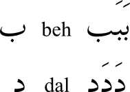
В этой главе рассматривается добавление глифа в арабский шрифт. Шрифт, который будет использован, — Graph, а глиф, который добавить, — peh (U+067E), который не встречается в самом арабском языке, но обозначает p в некоторых языках, для которых используется арабская письменность. (Полный список глифов, доступных для арабского письма, в Unicode charts.)
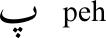
Сделать рабочую копию шрифта
Загрузить шрифт с веб-страницы и разархивировать его. Запустить FontForge и загрузить шрифт. Сохранить как файл sfd, отредактировав предложенное имя на GraphNew.sfd перед сохранением.
Переименовать шрифт
Зачем переименовывать шрифт?
Если не переименовать шрифт, адаптированный шрифт не будет установлен отдельно от исходного — сначала придется удалить исходный шрифт. Также имеет смысл переименовать шрифт, если задача распространять адаптации, в — Если первоначальный автор шрифта зарезервировал имя шрифта в рамках механизма зарезервированного имени шрифта (RFN), это исходное имя можно использовать только с версией шрифта исходного автора.
Изменить данные имени
Выбрать Element > Font Info и на панели PS Names изменить Fontname, Family Name и Name For Humans на GraphNew.
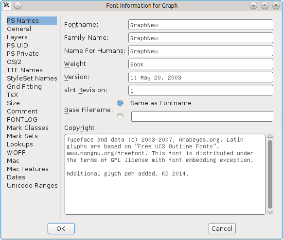
При желании поместить сообщение ‘Additional glyphs added by’ после текста, уже содержащегося в записи для Copyright.
На панели TTF Names имена Family и Fullname взяты из записей PS Names и уже должны отображать GraphNew (не удастся редактировать их напрямую). Изменить записи для Preferred Family и Compatible Full на GraphNew. Эти изменения имени теперь позволят при желании установить шрифт рядом с исходным.
При желании поместить сообщение ‘Additional glyphs added by’ после текста, уже содержащегося в записи для Designer.
Нажать OK, чтобы сохранить эти изменения. Получить сообщение о создании нового уникального идентификатора (XUID) для шрифта — нажать Change.
Добавить глиф для изолированной формы peh.
Перейть в арабский раздел таблицы шрифтов: выбрать View — Go to, щелкнуть раскрывающийся список и выбрать Arabic, затем нажать OK.
Если щелкнуть ячейку в таблице шрифтов, ее номер и имя в Юникоде отобразятся синим цветом в верхней части панели. Перейти к позиции 1662, которая будет отображаться синим цветом как 1662 (0x67e) U+067E “uni067E” ARABIC LETTER PEH. Ячейка под эталонным глифом содержит серый крестик, указывающий на то, что шрифт не включает этот глиф.
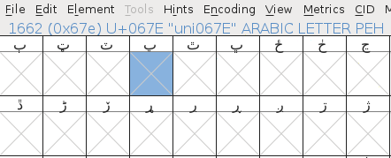
Cоздать peh, скопировав beh (U+0628) и заменить одну точку на три.
Щелкнуть ячейку beh (позиция 1576), затем щелкнуть правой кнопкой мыши и выбрать Copy. Затем щелкнуть правой кнопкой мыши ячейку peh и выбрать Paste. Теперь, когда beh скопировано в ячейку peh, следующим шагом будет изменение точки.
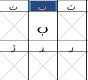
Найдите глиф с тремя точками — подойдет sheen (позиция 1588, U+0634). Дважды щелкнуть ячейку — откроется панель дизайна глифа. Нажать V, чтобы убедиться, что на панели инструментов выбран инструмент-указатель (стрелка), затем нажать Z и увеличить панель, чтобы лучше рассмотреть глиф.
Щелкнуть и перетащить так, чтобы узлы трех точек над блеском изменили цвет с розового на бежевый. Если случайно включить или пропустить узел, отменить его выбор или выбрать его, нажав Shift и щелкнув мышью. Нажать Alt + C, чтобы скопировать.
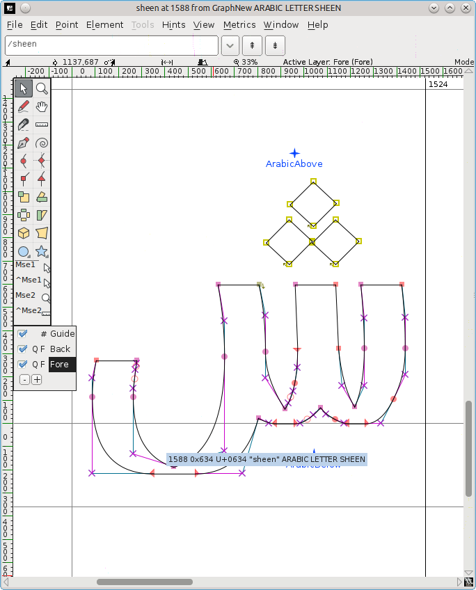
Вернуться к таблице шрифтов и дважды щелкнуть ячейку peh — это загрузит peh на другую вкладку панели дизайна глифов рядом с вкладкой sheen.
Нажать и перетащить, чтобы выделить точку под peh, затем нажать Delete. Нажать Alt + V, чтобы вставить три точки, которые, скорее всего, появятся над телом peh. Оставить точечные узлы выделенными, чтобы было легче инвертировать и перемещать их.
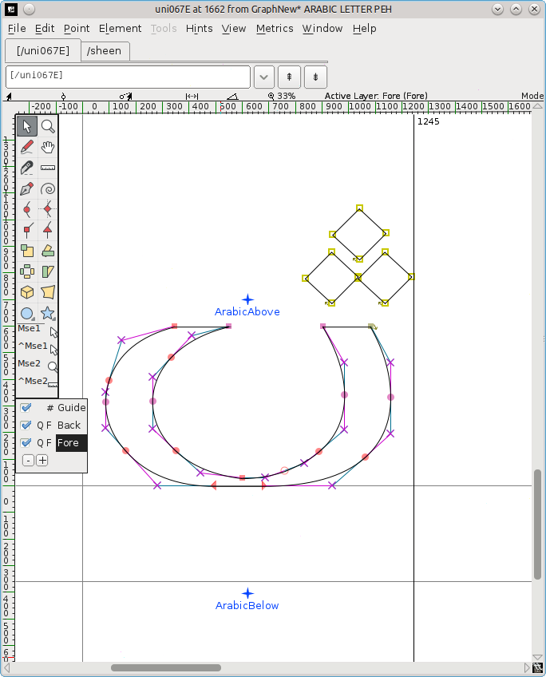
Инвертировать точки: выбрать инструмент flip (два треугольника с красной пунктирной линией между ними) на панели инструментов. (Альтернативно щелкнуть правой кнопкой мыши посередине точек и выбрать Flip the selection во всплывающем окне.) Щелкнуть один из узлов-точек и перетащить мышь немного влево или вправо.
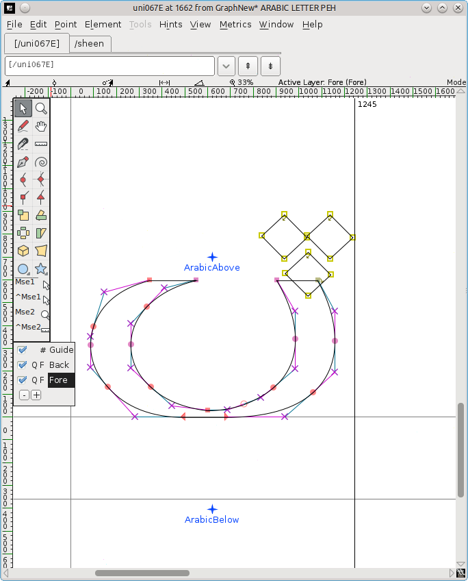
Переместить перевернутые точки: нажать V, чтобы снова выбрать инструмент-указатель, щелкнуть один из узлов-точек и перетащить их вниз под тело глифа. Расположить их по центру, над отметкой ArabicBelow.
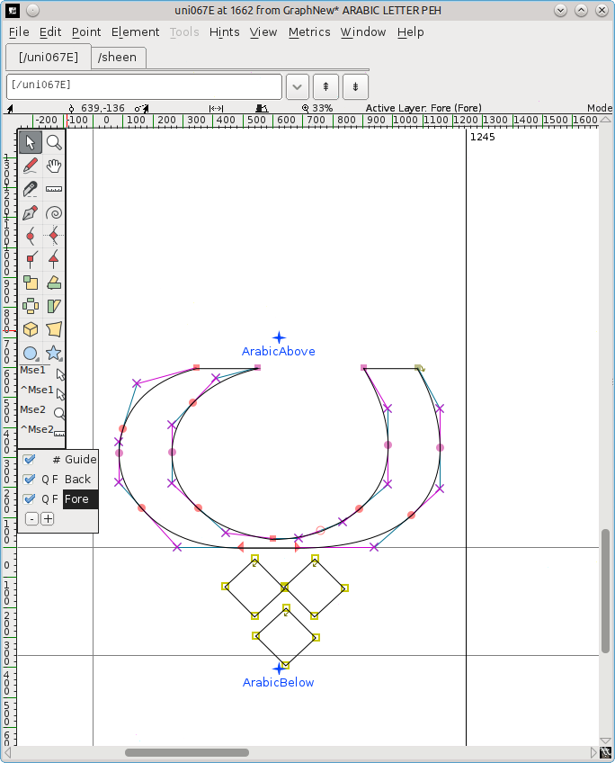
Закрыть панель дизайна глифов. Теперь в таблице шрифтов должен появиться новый глиф для peh. Сохранить адаптированный шрифт ( File > Save ).
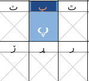
Добавить глифы для связанных форм peh.
Однако это лишь изолированная (автономная) форма глифа. Если попытатся использовать адаптированный шрифт, обнаружить, что начальная, средняя и конечная формы недоступны. Их необходимо создавать отдельно.
Формы создаются как незакодированные глифы (глифы, кодировка которых равна -1 в соглашениях FontForge). Нет заранее определенных слотов.” (Khaled Hosny)
Выбрать Encoding > Add Encoding Slots и ввести нужное количество глифов — в данном случае 3. FontForge добавится такое же количество слотов в самом конце шрифта, и переместиться туда по таблице шрифтов. Последние три ячейки (позиции 65537, 65538, 65539) имеют вопросительный знак в качестве ссылочного глифа, и именно в эти ячейки добавить незакодированные глифы, повторив описанный выше процесс.
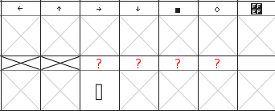
Обратить внимание: если по ошибке начать печатать, когда таблица шрифтов все еще находится в фокусе, перейти в европейский раздел вверху. Чтобы вернуться вниз, выбрать View > Go to, щелкнуть раскрывающийся список и выбрать Not a Unicode Character, а затем нажать OK.
Создать окончательную форму
Немного повернуть таблицу шрифтов вверх, пока не дойти до набора арабских глифов в позиции 65152 (U+FE80) и далее. В U+FE90 (позиция 65168) виден глиф behfinal — щелкните его и нажать Ctrl + C, чтобы скопировать его. Прокрутить вниз до третьей последней ячейки диаграммы (позиция 65537), щелкнуть ее и нажать Ctrl + V, чтобы вставить глиф behfinal.
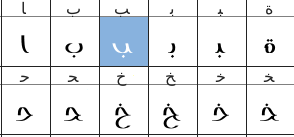
Щелкнуть правой кнопкой мыши ячейку и выбрать Glyph Info. Соглашение об именах заключается в использовании номера изолированного глифа + суффикса формы, поэтому изменить Glyph Name на uni067E.fina и нажать OK. Знак вопроса в ссылочной ячейке изменится на peh.
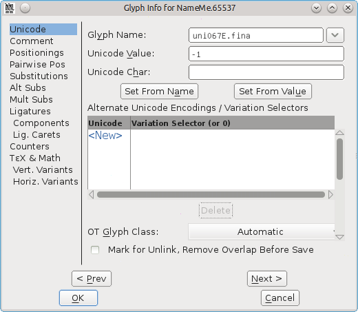
Получить три точки: дважды щелкнуть sheen (U+FEB5), чтобы загрузить его на панель дизайна глифа, выбрать три точки и нажать Ctrl + C.
Дважды щелкнуть новый pehfinal, чтобы загрузить его на панель дизайна глифа, щелкнуть и перетащить, чтобы выделить узлы точки, и нажать Delete.
Ctrl + V, чтобы вставить три точки из sheen, перевернуть их и переместить в положение под телом глифа. Нажать Ctrl + S, чтобы сохранить измененную таблицу шрифтов.
Создать начальную и медиальную формы.
Скопировать исходную форму U+FE91 (позиция 65169) в предпоследнюю ячейку (позиция 65538), удалить одну точку и вставить три точки.
Щелкнуть ячейку правой кнопкой мыши, выбрать Glyph Info, изменить Glyph Name на uni067E.init и нажать OK.
Скопировать медиальную форму U+FE92 (позиция 65170) в последнюю ячейку (позиция 65539), удалить одну и вставить три точки.
Щелкнуть ячейку правой кнопкой мыши, выбрать Glyph Info, изменить Glyph Name на uni067E.medi и нажать OK.
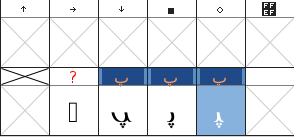
Выбрать File > Save, чтобы сохранить измененную таблицу шрифтов.
Добавить поиск
Изолированная форма должна быть сопоставлена (связана) с ее начальной, средней и конечной формами.
Выбрать Element > Font Info > Lookups.
Нажать на + рядом с записью ‘init’ Initial Forms in Arabic lookup 2. Откроется одноименное подменю. Нажать на это подменю.
Кнопка Edit Data справа станет доступной — нажать ее.
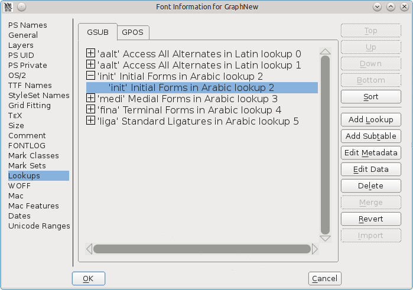
На появившейся панели Lookup Subtable убедиться, что кнопка Unicode отмечена. Прокручивать список символов вниз, пока не дойти до конца.
В поле рядом с Default Using Suffix ввести соответствующий суффикс (в данном случае init), а затем нажать Default Using Suffix.
В список символов будет добавлено новое сопоставление: от uni067E (изолированная форма peh) до uni067E.init (исходная форма). Нажать OK.
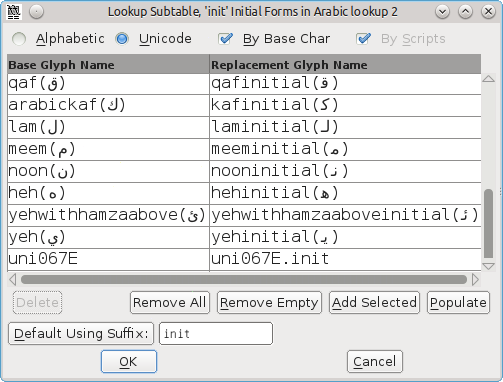
Сделать то же самое для подменю под записями ‘medi’ Medial Forms in Arabic lookup 2 и ‘fina’ Terminal Forms in Arabic lookup 2, выбрав medi и fina в качестве соответствующего суффикса.
Нажать OK еще раз, чтобы закрыть панель и сохранить таблицу шрифтов (Ctrl + S).
Обратить внимание, что Default Using Suffix работает только с глифами в блоке Unicode 06 (Arabic) — глифами в Unicode 07 (Arabic Supplement), например ain с двумя точками, возможно, придется добавить вручную, щелкнув строку с пометкой New и введя имена.
Создать адаптированный шрифт
Выбрать File > Generate Fonts.
В раскрывающемся списке, показывающем PS Type 1 (Binary), выбрать TrueType и убедиться, что имя файла читается как GraphNew.ttf.
Перейти туда, где задача сохранить шрифт, и нажать Generate. Нажать Yes и Generate, чтобы увидеть два информационных сообщения.
Затем можно использовать обычную процедуру установки шрифта для установки адаптированного шрифта. Новый глиф peh затем можно будет использовать вместе с существующими глифами в тех же бессмысленных примерах, что и в начале этой главы:
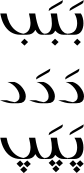
Обратить внимание: если использовать шрифт в LibreOffice и вносить изменения в этот шрифт, необходимо перезапустить LibreOffice, чтобы стали заметны какие-либо изменения — в противном случае будет использоваться предыдущая версия шрифта, а не версия с новыми изменениями.
Спасибо Khaled Hosny за советы по использованию FontForge для редактирования арабских глифов.
Дальнейшее чтение
- В Тема об улучшенном автоматического хинтирования на арабском языке есть совет, как рисовать перекрывающиеся части арабских глифов.